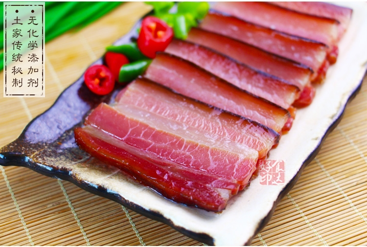
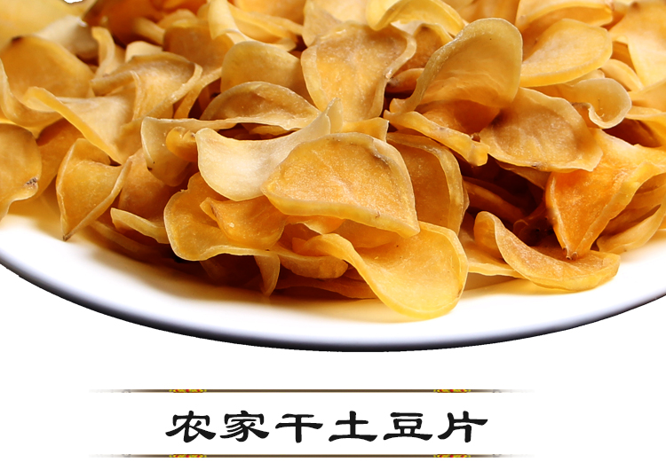
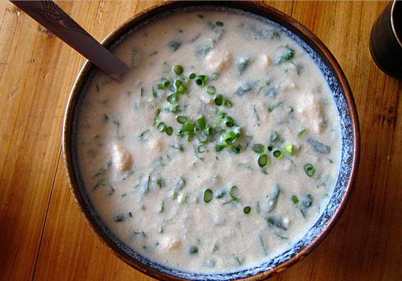
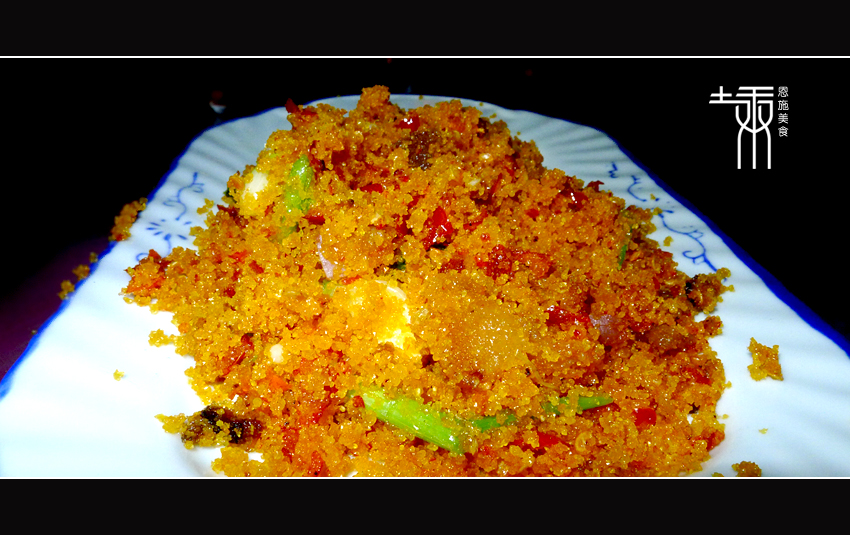
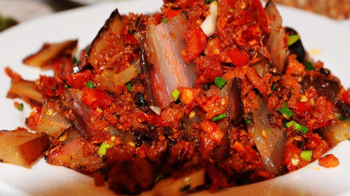

女儿会
——被誉为 “土家情人节”， 是与封建包办婚姻相对立的一种恋爱方式， 是恩施土家族青年在追求自由婚姻的过程中， 自发形成的以集体择偶为主要目的的节日盛会。 其主要特征是以歌为媒，自主择偶。月半节
——又称“鬼节”、“亡人节”，时间为农历七月十二， 土家人素有“年小月半大”之说。其主要活动是祭祖， 祭祖时烧纸钱，表示对已故亲人的哀悼。 过月半须全家团聚，并接回出嫁的女儿。祝米
——土家族人家生了孩子，必会对小生命的出世举行热烈庆典， 俗称“整祝米酒”。时间定于“洗三”那天，或定于满月之际。 无论地位贵贱，婴儿的外祖母在这天都将享受到上等贵客的殊荣。哭嫁
——土家族女儿出嫁之前要哭嫁。 是土家族婚俗中最富有人情韵味的文化特色。 哭嫁本是对封建礼教取代土家族自由婚俗的一种反叛， 后来，逐渐形成了以悲言喜的文化形态。 （哭嫁完全是一种热热闹闹的爱的庆典形式）
恩施由于其特殊的地理环境，所以当地餐饮既有蜀地麻辣特色又具潇湘咸辣风格。
特别是当地颇具土家族和苗族特色的风味小吃更是吸引了不少的游人，
比如有合渣、腊肉、土豆干等。
  
土家人吃食主要为杂粮，如苞谷、小米、荞麦、红苕等，吃大米较少。
以大块大砣肉待客为至诚，若切剁太细，就会被讥为小气、吝啬。
对于五味，尤喜辛辣、每餐不离辣椒，另有喝油茶的习惯。
即“土家人以油炸黄豆、苞谷、米花、豆乳、芝麻、绿豆诸物，取水和油，贡茶叶作汤泡之，饷客致敬。”
旧时还有咂酒习俗。
苗家饮食，多以苞谷，洋芋为主、较少大米。 喜食酸辣，好饮酒，红白喜事或亲友客人，常以酒款待。
 
《黄四姐》
至今已传唱150多年，起源于建始县三里乡。 是在恩施州广泛流传的土家族民歌经典， 它以喜花鼓的明快节奏和生动欢乐的情爱内容， 表现了青年男女互相爱慕追求、馈赠定情信物的情节， 被誉为中国民歌中鲜艳盛开的奇葩，经历百年而不衰。《龙船调》
是利川民歌，现为世界25首优秀民歌之一。 特点：歌词质相通俗，朗朗上口，衬词特多， 音乐旋律起伏悠扬，音域宽广，高亢婉转。《柑子树》
是表性很强的优秀民歌。“柑子树来柑子叶，干姊干妹舍不得。 柑子成树树成林，干姊干妹长成人。柑子结果姐出门，干姊干妹两离分。” 《柑子树》歌词巧妙运用谐音来咏叹干姊干妹的情恋， 表达了土家先民对爱情自由、婚姻自主的强烈追求。《六口茶》
是恩施土苗青年男女追求爱情及其向往幸福生活的古老民族礼节。 一口一问，一口一答，浓香酽醇，似娇音缠绵；清爽神怡，似弦歌绕梁。 远道慕名而来的游客，喝完六口茶，经得茶娱道，也就成了无话不说的朋友。《巴东石工号子》
表现石工在撬石、拖石、抬石时配合劳动节奏喊唱的歌谣， 7个土家汉子每人一根木棍在手，喊出一声高过一声的号子， 用洪亮高亢的气势唱出了土家石工的齐心协力与乐天精神。《哈格咂》
哈格咂（ha ge za）是恩施土家人常用的一个口头语言，有"哇塞"之意， 通常用以表达惊异、赞叹的情感，质朴、豪放、率性的恩施人， 有着生活的豪迈激情，在表达对生活的感触、赞叹与热爱的时候，便气度轩昂地一声“哈格咂！”摆手舞
土家族最有影响的大型歌舞，是土家族祭祀祈祷的一种活动。 一般在年节举行，并发展为祭祀、祈祷、歌舞、社交、体育竞赛、物资交流等综合性的民俗活动。 按其活动规模分为“大摆手”、 “小摆手”两种；按其舞蹈形式分为“单摆”、“双摆”、“回旋摆”等；撒尔嗬
又名跳丧鼓，是土家人的祭祀歌舞。 野三关是“撒尔嗬”的发源地，其唱腔古老独特，其动作粗犷豪放， 其鼓点明快、节奏感强。内容大多为追念死者的生平劳绩，土家人把白丧事当作红喜事来办， 把死亡看成登入极乐世界，表现了土家民族最质朴的生命观。板凳龙舞
是苗族请番薯神保佑番薯收成好的一种舞蹈形式。 男女表演者排成长蛇阵，手握板凳腿转着火堆舞动，就像龙在腾飞。傩戏
本意是满足人们的一种愿望，驱逐疫鬼，消灾纳福，多为喜庆场合演出。 表演形式丰富，融法事和戏剧于一体。唱腔音乐丰富多彩。 获奖剧目《姜女下池》《禾多多》《剃那比》